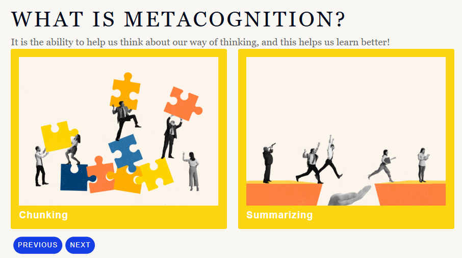

IMA4 : Linear eLearning module on using metacognitive strategies for improved learning
Performance Problem analysis: Metacognition is the ability of learners to think about their way of thinking. I designed a linear e-learning module to help teachers and learners appreciate the ways to comprehend their learning behavior. There are various metacognitive strategies, however, in the module, I focused on chunking and summarizing for improved learning outcomes. Chunking focuses on breaking down information into manageable units and summarizing refers to preparing the gist of information by using the main points. You can read the project proposal here.
Description of the Linear eLearning module: I used Adobe Captivate to create a linear module for explaining the metacognitive strategies. I used the design elements inbuilt in the software and integrated the same with video examples and my voiceover. I added a quiz at the end to assess the learner's understanding of the course. The quiz had diverse question types including drag-and-drop and matching columns. You can refer to the module by clicking on this link.
Educational value of the Linear eLearning module:The module helps learners understand their thinking by teaching strategies like breaking information into smaller parts (chunking) and summarizing main ideas. The e-learning module uses videos, voiceovers, and quizzes to make learning interactive and engaging. It provides tools for teachers and students to improve understanding and learning outcomes through active learning and interactive instruction.
Helpful Resources:
- Front-end analysis - Front-end analysis for the eLearning module
- Adobe Captivate - A video tutorial to use Adobe Captivate
- Linear E-Learning Modules - 7 tips to create linear eLearning courses